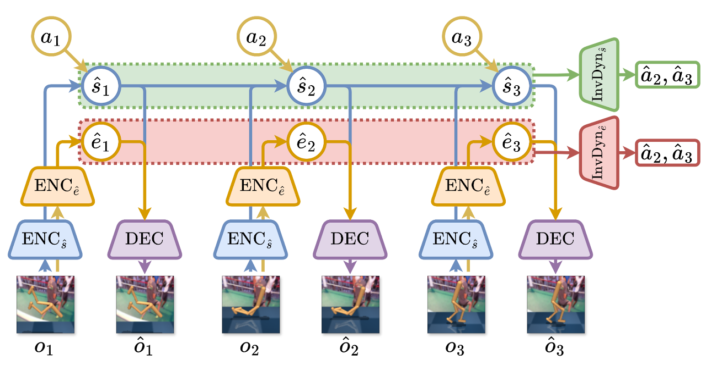
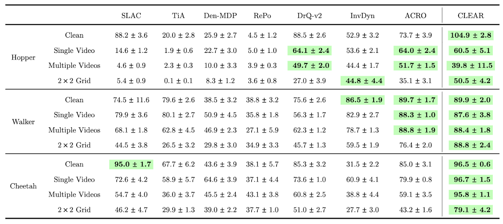
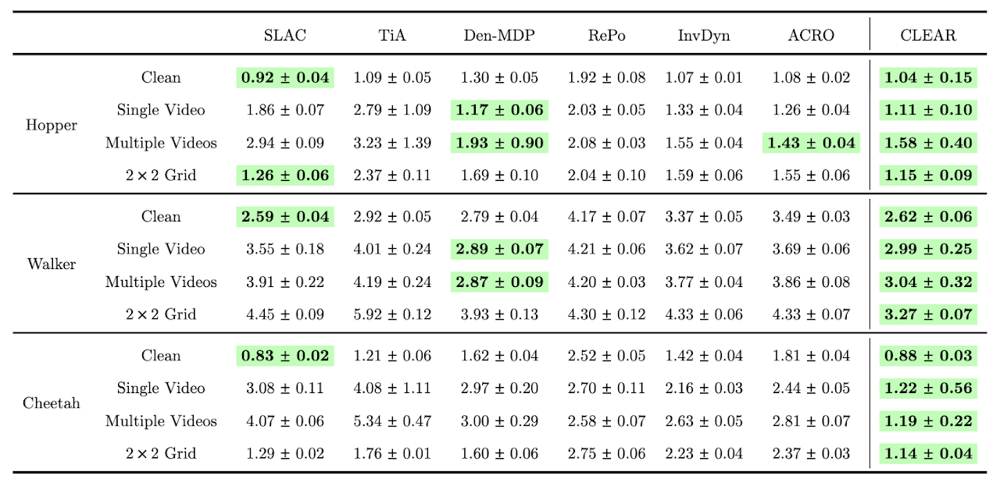

CLEAR: An Information-Theoretic Framework for Distraction-Free Representation Learning in Visual Offline RL
Abstract
Visual offline RL aims to learn an optimal policy for visual domains, solely from the pre-collected dataset comprised of actions taken on visual observations. Prior works on visual RL typically learn a dynamics model by extracting a latent state representation. However, the learned representation would contain factors irrelevant to control when there are distractions in the visual observations. These nuisance factors introduced by the distraction further exacerbates the difficulties of learning a good policy in the offline RL setting. In this paper, we propose CLEAR (Controllable Latent State ExtrActoR) for visual offline RL, which learns the dynamics model of a succinct agent-centric state representation that is robust to distractions. This is achieved by maximizing predictive information, imposing the Markov property of latent state transitions and disentangling the agent and distractions using an information-theoretic approach. More concretely, we exploit the fact that distractions are not influenced or controlled by actions to regularize our training. We empirically demonstrate that CLEAR is able to outperform baselines on the DeepMind Control Suite with various degrees of distractions and perform consistently well across these distractions. We further provide qualitative analysis on the results showing that our approach successfully disentangles the distraction factors from the agent-centric state representation.
CLEAR: Controllable Latent State Extractor
Under the presence of distraction (formalized as a POMDP with exogenous variables), prior approaches that aim to learn a single latent state representation using a stochastic encoder [1, 2, 3] fail to remove distraction from its representation despite having an information bottleneck term. Quantitatively, training TD3+BC [4] on top of representations learned via SLAC [1] shows a decrease in performance once distractions are introduced (see the Experiment section below for the setup).
We propose to model the distraction explicitly, thus we will have two stochastic encoders. The two encoders are trained to optimize (1) predictive information, (2) impose Markovian representation, and (3) impose disentangled representations between the two sets of representations. The simple variational lower-bound of the proposed objective amounts to cooperative reconstruction along with bottleneck terms for each representation.
We then regularize the two sets of representations by their controllability by action. We formalize this as: transitions of representations are predictive of action for the agent part, and vice versa (a min-max optimization). Our method is illustrated in Figure 1 below.

figure1.pngExperiment
We evaluate our algorithm on three sets of environments from the DeepMind Control Suite: Hopper-Hop, Walker-Walk, and Cheetah-Run. For each dataset, we generate four levels of varying difficulties of distractions by adjusting the types of distractions present in the observation (Clean, Single Video, Multiple Videos, 2x2 Grid). The controllable part of the observation of the 2x2 Grid distraction level is the agent placed on the top-left corner, while the other agents are executed using a uniform random policy.
Quantitatively, our representation learning method is suitable for offline RL, achieving almost invariant performance across different distractions (Table 2). Our representation learning method is also informative about the ground-truth state, shown by the low validation error on the ground-truth state linear regression task (Table 3).

table2.png
table3.pngQualitatively, we can inspect the learned agent-centric representation and the learned distraction representation, since we use a compositional decoder as mentioned in Figure 1. We show the qualitative result for the Video and 2x2 Grid distraction cases below, where the columns show the original observation, the reconstructed agent-centric part, and the reconstructed distraction part, respectively.
 qualitative.png
qualitative.png
References
- Alex X. Lee, Anusha Nagabandi, Pieter Abbeel, and Sergey Levine. Stochastic latent actor-critic: Deep reinforcement learning with a latent variable model. In Advances in Neural Information Processing Systems, volume 33, pages 741–752, 2020.
- Danijar Hafner, Timothy Lillicrap, Ian Fischer, Ruben Villegas, David Ha, Honglak Lee, and James Davidson. Learning latent dynamics for planning from pixels. In Proceedings of the 36th International Conference on Machine Learning, volume 97 of Proceedings of Machine Learning Research, pages 2555–2565. PMLR, 09–15 Jun 2019.
- Danijar Hafner, Timothy Lillicrap, Jimmy Ba, and Mohammad Norouzi. Dream to control: Learning behaviors by latent imagination. In International Conference on Learning Representations, 2020.
- Scott Fujimoto and Shixiang Gu. A minimalist approach to offline reinforcement learning. In Advances in Neural Information Processing Systems, 2021.